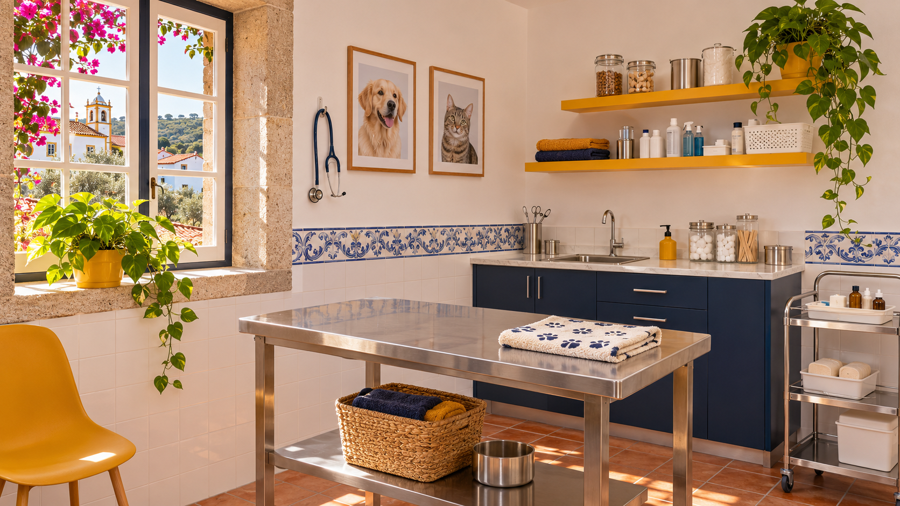

Cuidar do seu animal, aqui em Faralhão
Consultas, vacinação e acompanhamento com a Dra. Suzana Lourenço.
O que fazemos pelo seu animal
Cuidados de rotina e acompanhamento, com marcação prévia.
Consultas gerais
Avaliação da saúde e acompanhamento do seu cão ou gato.
Vacinação
Plano de vacinas ajustado a cada animal.
Desparasitação
Proteção contra parasitas internos e externos.
Identificação eletrónica
Microchip e registo do animal.
Alimentação
Aconselhamento para cada idade e necessidade.
Check-up sénior
Revisão regular da saúde dos animais mais velhos.
Cada fase da vida, um cuidado
Cachorros e gatinhos
Primeiras vacinas, identificação e um bom começo.
Adultos
Consultas de rotina, desparasitação e prevenção.
Seniores
Revisões mais frequentes e atenção ao conforto.

Dra. Suzana Lourenço
Médica veterinária em Faralhão, Setúbal. A sua história e a sua fotografia entram aqui.
Marque a consulta
- OndeFaralhão, Setúbal
- Telefonea indicar pela Dra.
- Horárioa indicar pela Dra.